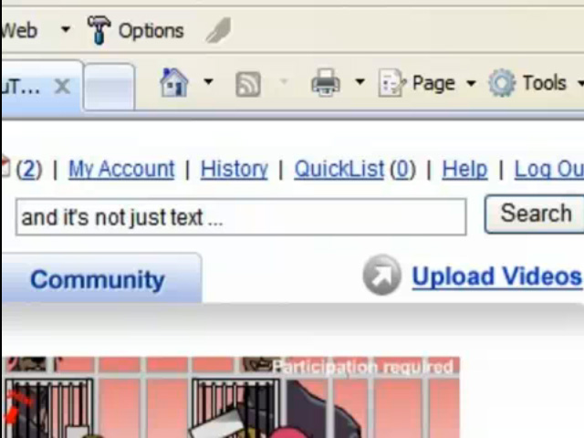

|
y no es sólo texto ...
|
|
|

|
Como ya has visto en el vídeo inicial, Internet se basa en la comunicación gráfica y visual. Aquello que se intenta difundir debe entrar
por la vista, lo importante es captar la atención e informar en un pantallazo.
Ya se sabe ¡una imagen vale más que mil palabras!
Por este motivo, es fundamental el trabajo con imágenes y vídeos en la red.
|
|
Img 0. No es sólo texto
Imagen del vídeo The Machine... bajo licencia Cretive Commons |
|
U10 - Información digital y Web